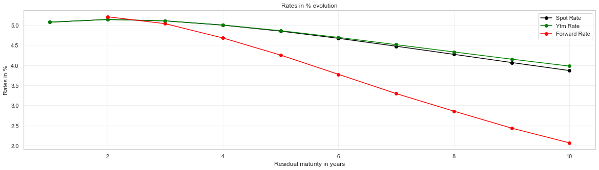

Chapter 04
Results
Thirty input numbers — ten maturities, ten prices, ten coupons — produce a discount curve and three rate curves. Here is what came out.
The curve, both ways
The same curve can be shown as discount factors or as rates. The factors fall smoothly from 0.9517 to 0.6842; the rates derived from them are far more expressive, because differentiating a smooth falling series exaggerates its shape.
Hovering reads off the exact value at each maturity. The full table is below if you would rather have all of it at once.
What the shape says
Spot and yield rise slightly to a peak of 5.14% at two years, then decline steadily to 3.87% and 3.98% respectively. This is a humped curve: short rates elevated, a small bump in the near term, then a long descent.
The forward curve tells the same story more loudly. It begins above both others at 5.21% and ends at 2.08% — a fall of 3.13 points against the spot curve’s 1.20. As Chapter 03 sets out, that is arithmetic rather than a separate opinion: spot rates are the geometric average of forwards, and an average moves less than the thing it averages.
Where the curves separate
Spot and YTM are identical at one year (both 5.07%) and drift apart from year five, reaching an 11 basis-point gap at ten years. A one-year bond pays once, so its yield is its spot rate. The gap only opens once there are enough coupons for the curve’s slope to bite.
Every number
| Maturity | 1Y | 2Y | 3Y | 4Y | 5Y | 6Y | 7Y | 8Y | 9Y | 10Y |
|---|---|---|---|---|---|---|---|---|---|---|
| Price | 96.60 | 93.71 | 91.56 | 90.24 | 89.74 | 90.04 | 91.09 | 92.82 | 95.19 | 98.14 |
| Coupon % | 1.50 | 1.75 | 2.00 | 2.25 | 2.50 | 2.75 | 3.00 | 3.25 | 3.50 | 3.75 |
| Discount factor | 0.9517 | 0.9046 | 0.8612 | 0.8227 | 0.7892 | 0.7604 | 0.7361 | 0.7156 | 0.6985 | 0.6842 |
| Spot % | 5.07 | 5.14 | 5.11 | 5.00 | 4.85 | 4.67 | 4.47 | 4.27 | 4.07 | 3.87 |
| YTM % | 5.07 | 5.14 | 5.11 | 5.00 | 4.86 | 4.69 | 4.51 | 4.33 | 4.15 | 3.98 |
| 1y forward % | — | 5.21 | 5.04 | 4.68 | 4.26 | 3.78 | 3.30 | 2.87 | 2.45 | 2.08 |
As the notebook drew it

Each series was also plotted alone: spot rates, yield to maturity, forward rates.
{kind=link}
{kind=link}
{kind=link}